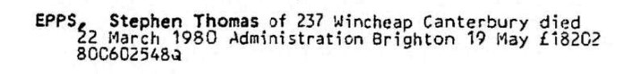
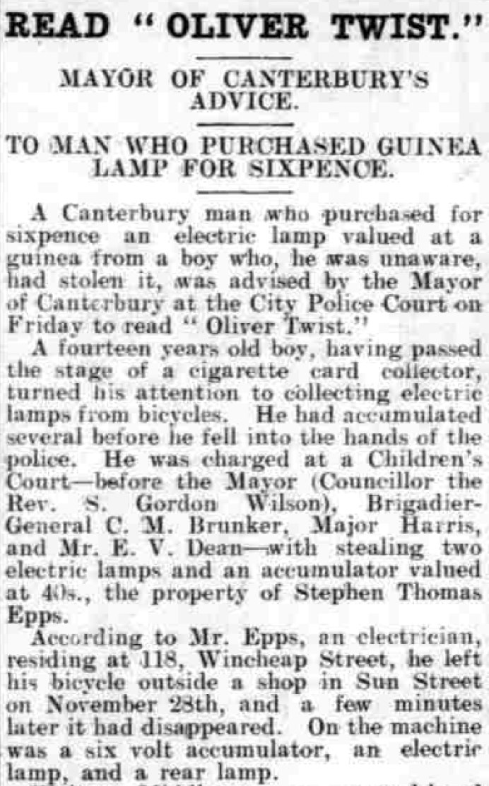
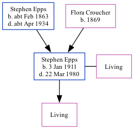

Stephen Thomas Epps 1911 - 1980
[ Home ] | [ Calendar ] | [ Surnames Index ] | [ Family History ]An electrician and the son of Stephen Epps (a tractor engine driver) and Flora CroucherStephen Epps, the second cousin twice-removed on the father's side of Nigel Horne, was born in Thanington, Kent, England on Jan 3, 19111,2,3,4, was baptized there at St Nicholas on Mar 5, 1911. He married Everel Colyer (with whom he had 1 surviving child) in Bridge, Kent, England around Aug 19346.
Stephen spent all of his life in Kent, England. Throughout his life, he lived in several places around the county: at Marlowe Terrace in Thanington on Apr 2, 19111; at 102 Wincheap, Canterbury on Jun 19, 19212; at 118 Wincheap, Canterbury in 1929 and on Sep 29, 19393; and at 237 Wincheap, Canterbury in 1980.
He died on Mar 22, 1980 in Canterbury, Kent, England4,5.
Parents
- Stephen was born c. Feb 1863
- Flora Annie was born in 1869
Citations
- 1911 Census for England & Wales - Findmypast (was age 0 and the son of the head of the household)
- 1921 Census Of England & Wales - Findmypast (was age 10 and the son of the head of the household)
- 1939 Register - Findmypast (was the head of the household)
- England & Wales deaths 1837-2007 - Findmypast
- England & Wales Government Probate Death Index 1858-2019 - Findmypast
- England & Wales Marriages 1837-2005 - Findmypast
Media
Stephen Thomas Epps - probate

Whitstable Times and Herne Bay Herald - 14 Dec 1929

England & Wales deaths 1837-2007 - BMD/D/1980/1/AZ/000362/058
England & Wales marriages 1837-2005 - BMD/M/1934/3/AZ/000469/135
Kent Baptisms - GBPRS/CANT/B/96714628
England & Wales Government Probate Death Index 1858-2019 - GBOR/GOVPROBATE/C/1980-1980/00071443
1921 Census of England & Wales - GBC/1921/RG15/04323/0109/03
Family Tree
Generated by ged2site. Last updated on Nov 13, 2024